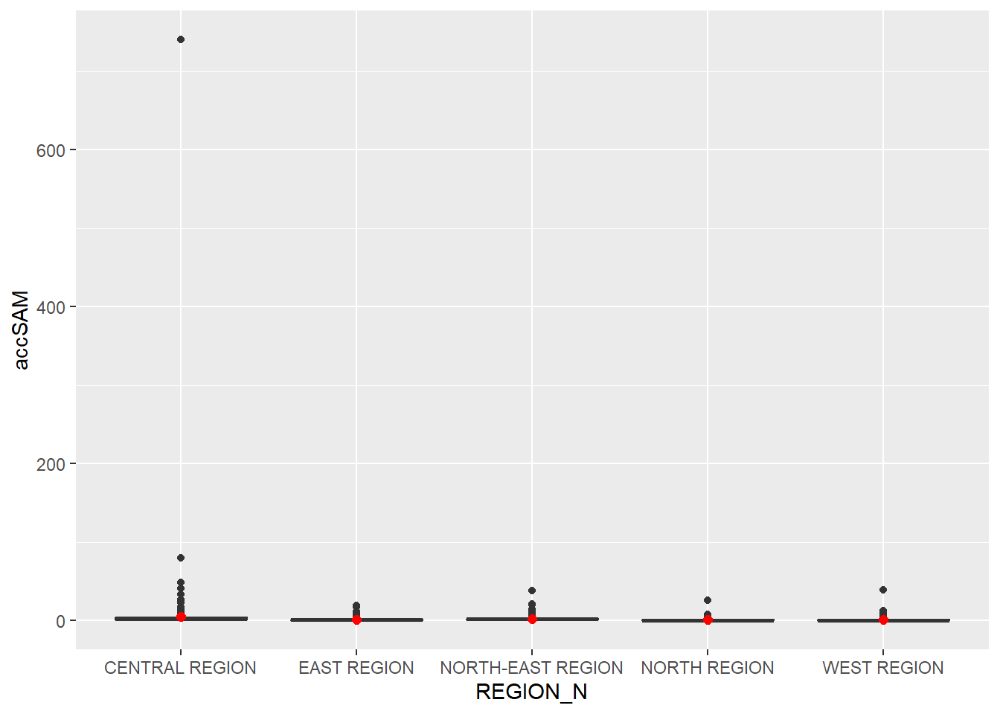
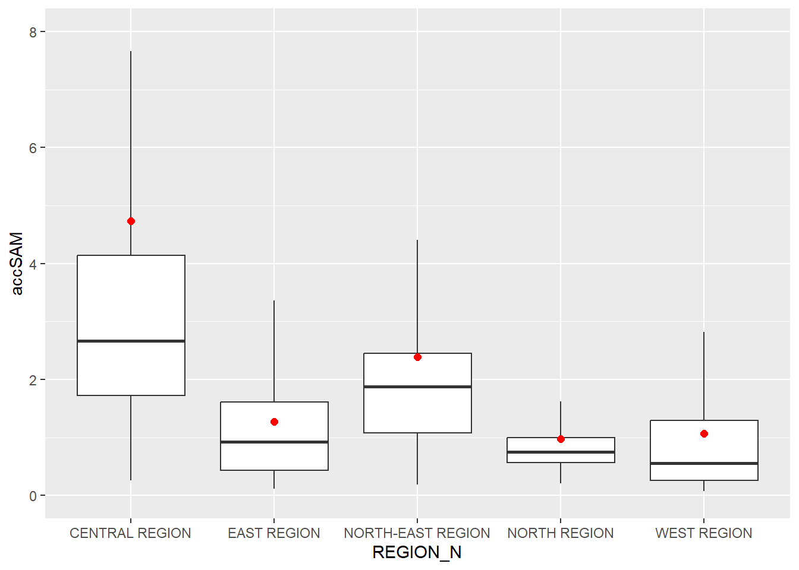

pacman::p_load(tmap, SpatialAcc, sf,
ggstatsplot, reshape2,
tidyverse)Modelling Geographic Accessibility
In this hands-on exercise, we model geographic accessibility using R.
This exercise is based on Chapter 17 of Dr Kam’s online book which can be accessed here.
Getting Started
Data Sources
The data for this exercise comes in the form of four files:
2014 Master Plan Planning subzone boundary in shapefile format sourced from data.gov.sg
Singapore GIS data with hexagons of 250m radius generated by using
st_make_grid()of the sf packageLocation of eldercare centres sourced from data.gov.sg and in shapefile format
A distance matrix in csv format from the hexagons to the eldercare centres. The data also contains fields for the entry, exit and network costs which give the distance between roads and the hexagon, between roads and eldercare centres, and between the network points of the hexagon and eldercare centre.
Aside from the first dataset, the balance are already processed datasets c/o Prof Kam to be used by his students for this exercise.
Installing and launching R packages
This exercise will make use of six R packages. For this exercise, we will use spatialAcc which is used to model geographic accessibility.
The code chunk below uses p_load() of pacman package to check if the packages are installed in the computer. It installs them first if they are not. It then loads them into R.
Geospatial Data Wrangling
Importing geospatial data
We use st_read() of sf package to load the three geospatial datasets into R.
mpsz <- st_read(dsn = "data/geospatial", layer = "MP14_SUBZONE_NO_SEA_PL")Reading layer `MP14_SUBZONE_NO_SEA_PL' from data source
`C:\drkrodriguez\ISSS626-GAA\Hands-on\Hands-On_Ex12\data\geospatial'
using driver `ESRI Shapefile'
Simple feature collection with 323 features and 15 fields
Geometry type: MULTIPOLYGON
Dimension: XY
Bounding box: xmin: 2667.538 ymin: 15748.72 xmax: 56396.44 ymax: 50256.33
Projected CRS: SVY21hexagons <- st_read(dsn = "data/geospatial", layer = "hexagons") Reading layer `hexagons' from data source
`C:\drkrodriguez\ISSS626-GAA\Hands-on\Hands-On_Ex12\data\geospatial'
using driver `ESRI Shapefile'
Simple feature collection with 3125 features and 6 fields
Geometry type: POLYGON
Dimension: XY
Bounding box: xmin: 2667.538 ymin: 21506.33 xmax: 50010.26 ymax: 50256.33
Projected CRS: SVY21 / Singapore TMeldercare <- st_read(dsn = "data/geospatial", layer = "ELDERCARE") Reading layer `ELDERCARE' from data source
`C:\drkrodriguez\ISSS626-GAA\Hands-on\Hands-On_Ex12\data\geospatial'
using driver `ESRI Shapefile'
Simple feature collection with 120 features and 19 fields
Geometry type: POINT
Dimension: XY
Bounding box: xmin: 14481.92 ymin: 28218.43 xmax: 41665.14 ymax: 46804.9
Projected CRS: SVY21 / Singapore TMThe outputs show that all the objects are in sf format. The object mpsz is both in multipolygon class and currently does not have EPSG information.
Updating CRS information
The code chunk below assigns and ensures that all objects have the same EPSG code of 3414.
mpsz <- st_transform(mpsz, 3414)
eldercare <- st_transform(eldercare, 3414)
hexagons <- st_transform(hexagons, 3414)We can then use st_crs() of sf package to confirm the CRS information of an object.
st_crs(mpsz)Coordinate Reference System:
User input: EPSG:3414
wkt:
PROJCRS["SVY21 / Singapore TM",
BASEGEOGCRS["SVY21",
DATUM["SVY21",
ELLIPSOID["WGS 84",6378137,298.257223563,
LENGTHUNIT["metre",1]]],
PRIMEM["Greenwich",0,
ANGLEUNIT["degree",0.0174532925199433]],
ID["EPSG",4757]],
CONVERSION["Singapore Transverse Mercator",
METHOD["Transverse Mercator",
ID["EPSG",9807]],
PARAMETER["Latitude of natural origin",1.36666666666667,
ANGLEUNIT["degree",0.0174532925199433],
ID["EPSG",8801]],
PARAMETER["Longitude of natural origin",103.833333333333,
ANGLEUNIT["degree",0.0174532925199433],
ID["EPSG",8802]],
PARAMETER["Scale factor at natural origin",1,
SCALEUNIT["unity",1],
ID["EPSG",8805]],
PARAMETER["False easting",28001.642,
LENGTHUNIT["metre",1],
ID["EPSG",8806]],
PARAMETER["False northing",38744.572,
LENGTHUNIT["metre",1],
ID["EPSG",8807]]],
CS[Cartesian,2],
AXIS["northing (N)",north,
ORDER[1],
LENGTHUNIT["metre",1]],
AXIS["easting (E)",east,
ORDER[2],
LENGTHUNIT["metre",1]],
USAGE[
SCOPE["Cadastre, engineering survey, topographic mapping."],
AREA["Singapore - onshore and offshore."],
BBOX[1.13,103.59,1.47,104.07]],
ID["EPSG",3414]]Cleaning and updating attribute fields of the geospatial data
If we inspect the last two objects, we see that there are a number of redundant or unnecessary fields. We use the code chunk below to only keep the necessary ones using select(). We also add a new field called capacity to both objects using mutate().
eldercare <- eldercare %>%
select(fid, ADDRESSPOS) %>%
mutate(capacity = 100)
hexagons <- hexagons %>%
select(fid) %>%
mutate(demand = 100)For this exercise we use a dummy value of 100 for the capacity, but, in practice, this number needs to be updated with the actual capacity of the location.
Aspatial Data Handling and Wrangling
Importing the Distance Matrix
The code chunk below uses read_csv() to load the distance matrix into R
ODMatrix <- read_csv("data/aspatial/OD_Matrix.csv", skip = 0)Rows: 375000 Columns: 6
── Column specification ────────────────────────────────────────────────────────
Delimiter: ","
dbl (6): origin_id, destination_id, entry_cost, network_cost, exit_cost, tot...
ℹ Use `spec()` to retrieve the full column specification for this data.
ℹ Specify the column types or set `show_col_types = FALSE` to quiet this message.We can inspect the object using head()
head(ODMatrix)# A tibble: 6 × 6
origin_id destination_id entry_cost network_cost exit_cost total_cost
<dbl> <dbl> <dbl> <dbl> <dbl> <dbl>
1 1 1 668. 19847. 47.6 20562.
2 1 2 668. 45027. 31.9 45727.
3 1 3 668. 17644. 173. 18486.
4 1 4 668. 36010. 92.2 36770.
5 1 5 668. 31068. 64.6 31801.
6 1 6 668. 31195. 117. 31980.Tidying the distance matrix
Based on our inspection, we see that the distance matrix is not yet in the typical matrix format where the origin is on one axis and the destination is on another. Instead, the origins and the destinations are in their respective columns and there are fields for the distances.
In order to transform the object into matrix format, we use spread() of tidyr in the code chunk below. pivot_wider() can also be used to achieve the same result
distmat <- ODMatrix %>%
select(origin_id, destination_id, total_cost) %>%
spread(destination_id, total_cost)%>%
select(c(-c('origin_id')))class(distmat)[1] "tbl_df" "tbl" "data.frame"The matrix is still in dataframe format and is in meters. We use the code below to convert it to km and turn it into a matrix.
distmat_km <- as.matrix(distmat/1000)class(distmat_km)[1] "matrix" "array" Modelling and Visualizing Accessibility using Hansen Method
Computing Hansen Accessibility
To compute for the Hansen accessibility we use ac() of the SpatialAcc package. The code chunk below does this and also uses data.frame() to convert the output into dataframe format.
acc_Hansen <- data.frame(ac(hexagons$demand,
eldercare$capacity,
distmat_km,
#d0 = 50,
power = 2,
family = "Hansen"))glimpse(acc_Hansen)Rows: 3,125
Columns: 1
$ ac.hexagons.demand..eldercare.capacity..distmat_km..power...2.. <dbl> 1.6483…We see that the function returns one field and its default field name is a unreadable. We can fix this by assigning a new name to colnames()
colnames(acc_Hansen) <- "accHansen"glimpse(acc_Hansen)Rows: 3,125
Columns: 1
$ accHansen <dbl> 1.648313e-14, 1.096143e-16, 3.865857e-17, 1.482856e-17, 1.05…We then convert the accessibility measure to tibble format and then bind it with the hexagon data frame using the two lines of code in the following code chunk
acc_Hansen <- tibble::as_tibble(acc_Hansen)
hexagon_Hansen <- bind_cols(hexagons, acc_Hansen)Visualising Hansen’s Accessibility
We first extract the extent of the hexagons object using st_bbox() of sf package
mapex <- st_bbox(hexagons)We use tmap package in the code chunk below to create a visualization of the accessibility of eldercare centres across Singapore using Hansen method.
tmap_mode("plot")tmap mode set to plottingtm_shape(hexagon_Hansen,
bbox = mapex) +
tm_fill(col = "accHansen",
n = 10,
style = "quantile",
border.col = "black",
border.lwd = 1) +
tm_shape(eldercare) +
tm_symbols(size = 0.1) +
tm_layout(main.title = "Accessibility to eldercare: Hansen method",
main.title.position = "center",
main.title.size = 2,
legend.outside = FALSE,
legend.height = 0.45,
legend.width = 3.0,
legend.format = list(digits = 6),
legend.position = c("right", "top"),
frame = TRUE) +
tm_compass(type="8star", size = 2) +
tm_scale_bar(width = 0.15) +
tm_grid(lwd = 0.1, alpha = 0.5)
Statistical graphical representation
We can compare the distribution of the accessibility values (using Hansen method) across planning regions.
First, we need to include the planning region field into hexagon_Hansen object by using st_join() in the code chunk below.
hexagon_Hansen <- st_join(hexagon_Hansen, mpsz,
join = st_intersects)We then use ggplot() to produce a box plot of the accessibility value by planning region.
ggplot(data=hexagon_Hansen,
aes(y = log(accHansen),
x= REGION_N)) +
geom_boxplot() +
geom_point(stat="summary",
fun.y="mean",
colour ="red",
size=2)Warning in geom_point(stat = "summary", fun.y = "mean", colour = "red", :
Ignoring unknown parameters: `fun.y`No summary function supplied, defaulting to `mean_se()`
Modelling and Visualizing Accessibility using KD2SFCA Method
Computing KD2SFCA Accessibility
To compute for the KD2SFCA accessibility we use ac() of the SpatialAcc package. The code chunk below does this and also uses data.frame() to convert the output into dataframe format. Compared to the previous section, we use a different value for the family argument.
acc_KD2SFCA <- data.frame(ac(hexagons$demand,
eldercare$capacity,
distmat_km,
d0 = 50,
power = 2,
family = "KD2SFCA"))
colnames(acc_KD2SFCA) <- "accKD2SFCA"
acc_KD2SFCA <- tibble::as_tibble(acc_KD2SFCA)
hexagon_KD2SFCA <- bind_cols(hexagons, acc_KD2SFCA)glimpse(acc_KD2SFCA)Rows: 3,125
Columns: 1
$ accKD2SFCA <dbl> 1.745751e-149, 1.849596e-192, 4.442757e-202, 3.938161e-211,…The object already includes updating the measure’s column name and binds the measure values to the hexagon sf dataframe.
Visualising KD2SFCA’s Accessibility
We again use tmap package in the code chunk below to create a visualization of the accessibility of eldercare centres across Singapore using KD2SFCA method.Note that we reuse the mapex object from the previous section.
tmap_mode("plot")tmap mode set to plottingtm_shape(hexagon_KD2SFCA,
bbox = mapex) +
tm_fill(col = "accKD2SFCA",
n = 10,
style = "quantile",
border.col = "black",
border.lwd = 1) +
tm_shape(eldercare) +
tm_symbols(size = 0.1) +
tm_layout(main.title = "Accessibility to eldercare: KD2SFCA method",
main.title.position = "center",
main.title.size = 2,
legend.outside = FALSE,
legend.height = 0.45,
legend.width = 3.0,
legend.format = list(digits = 6),
legend.position = c("right", "top"),
frame = TRUE) +
tm_compass(type="8star", size = 2) +
tm_scale_bar(width = 0.15) +
tm_grid(lwd = 0.1, alpha = 0.5)
Statistical graphical representation
We can compare the distribution of the accessibility values (using Hansen method) across planning regions.
First, we need to include the planning region field into the last object by using st_join() in the code chunk below.
hexagon_KD2SFCA <- st_join(hexagon_KD2SFCA, mpsz,
join = st_intersects)We then use ggplot() to produce a box plot of the accessibility value by planning region.
ggplot(data=hexagon_KD2SFCA,
aes(y = accKD2SFCA,
x= REGION_N)) +
geom_boxplot() +
geom_point(stat="summary",
fun.y="mean",
colour ="red",
size=2)Warning in geom_point(stat = "summary", fun.y = "mean", colour = "red", :
Ignoring unknown parameters: `fun.y`No summary function supplied, defaulting to `mean_se()`
Modelling and Visualizing Accessibility using SAM Method
Computing SAM’s Accessibility
To compute for the SAM accessibility we use ac() of the SpatialAcc package. The code chunk below does this and also uses data.frame() to convert the output into dataframe format. Compared to the previous section, we use a different value for the family argument.
acc_SAM <- data.frame(ac(hexagons$demand,
eldercare$capacity,
distmat_km,
d0 = 50,
power = 2,
family = "SAM"))
colnames(acc_SAM) <- "accSAM"
acc_SAM <- tibble::as_tibble(acc_SAM)
hexagon_SAM <- bind_cols(hexagons, acc_SAM)glimpse(acc_SAM)Rows: 3,125
Columns: 1
$ accSAM <dbl> 0.11941792, 0.10101549, 0.09775876, 0.09490965, 0.09391923, 0.0…The object already includes updating the measure’s column name and binds the measure values to the hexagon sf dataframe.
Visualising SAM’s Accessibility
We again use tmap package in the code chunk below to create a visualization of the accessibility of eldercare centres across Singapore using SAM method. Note that we reuse the mapex object from the previous section.
tmap_mode("plot")tmap mode set to plottingtm_shape(hexagon_SAM,
bbox = mapex) +
tm_fill(col = "accSAM",
n = 10,
style = "quantile",
border.col = "black",
border.lwd = 1) +
tm_shape(eldercare) +
tm_symbols(size = 0.1) +
tm_layout(main.title = "Accessibility to eldercare: SAM method",
main.title.position = "center",
main.title.size = 2,
legend.outside = FALSE,
legend.height = 0.45,
legend.width = 3.0,
legend.format = list(digits = 3),
legend.position = c("right", "top"),
frame = TRUE) +
tm_compass(type="8star", size = 2) +
tm_scale_bar(width = 0.15) +
tm_grid(lwd = 0.1, alpha = 0.5)
Statistical graphical representation
We can compare the distribution of the accessibility values (using Hansen method) across planning regions.
First, we need to include the planning region field into the last object by using st_join() in the code chunk below.
hexagon_SAM <- st_join(hexagon_SAM, mpsz,
join = st_intersects)We then use ggplot() to produce a box plot of the accessibility value by planning region.
ggplot(data=hexagon_SAM,
aes(y = accSAM,
x= REGION_N)) +
geom_boxplot() +
geom_point(stat="summary",
fun.y="mean",
colour ="red",
size=2)Warning in geom_point(stat = "summary", fun.y = "mean", colour = "red", :
Ignoring unknown parameters: `fun.y`No summary function supplied, defaulting to `mean_se()`
The boxes are not clear due to the outliers. Note that we can hide outliers in ggplot boxplots using the outlier.shape argument. In addition, the y-axis needs to be reset using coord_cartesian() as removing the outliers does not aautomatically adjust the axis.
ggplot(data=hexagon_SAM,
aes(y = accSAM,
x= REGION_N)) +
geom_boxplot(outlier.shape = NA) +
coord_cartesian(ylim = c(0,8)) +
geom_point(stat="summary",
fun.y="mean",
colour ="red",
size=2)Warning in geom_point(stat = "summary", fun.y = "mean", colour = "red", :
Ignoring unknown parameters: `fun.y`No summary function supplied, defaulting to `mean_se()`